A regional airport's catchment is not its market
Regional airports start with a home-field advantage: they are closer. But the people nearest to an airport are not necessarily its passengers. A traveller may accept an extra hour's drive for daily flights, a lower fare or a better connection.
That choice changes with the trip. Hamilton is convenient for a day return to Wellington. For a week in Europe, a traveller may be much less fussy about the drive if Auckland offers more frequent flights and simpler connections.
The same question matters when an airline considers a new route. Is there enough local demand that values convenience, and can the route create new trips rather than simply take passengers from a larger airport?
These maps measure an airport's local access advantage. For every neighbourhood I found the closest airport and measured its drive-time head start over the next closest. A large head start is a useful foundation. It is not a passenger forecast: schedules, destinations and fares decide how much of that advantage an airport can convert into traffic.
New Zealand

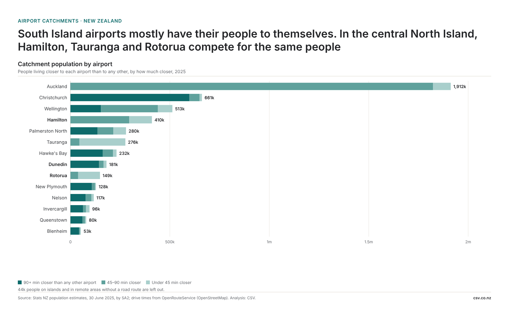

Dunedin has a strong local access advantage: four in five of its 181,000 nearby people would need to drive 90 minutes more to reach another airport. That gives it a solid convenience base, rather than guaranteeing their custom. Hamilton (410,000) and Rotorua (149,000) overlap more with Tauranga, so their local markets are more contestable.

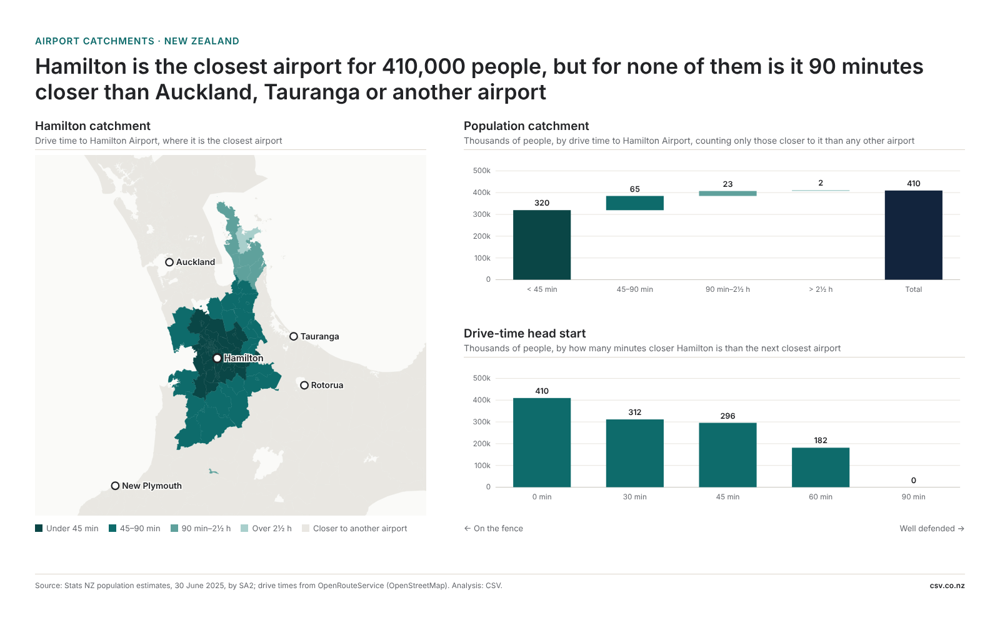

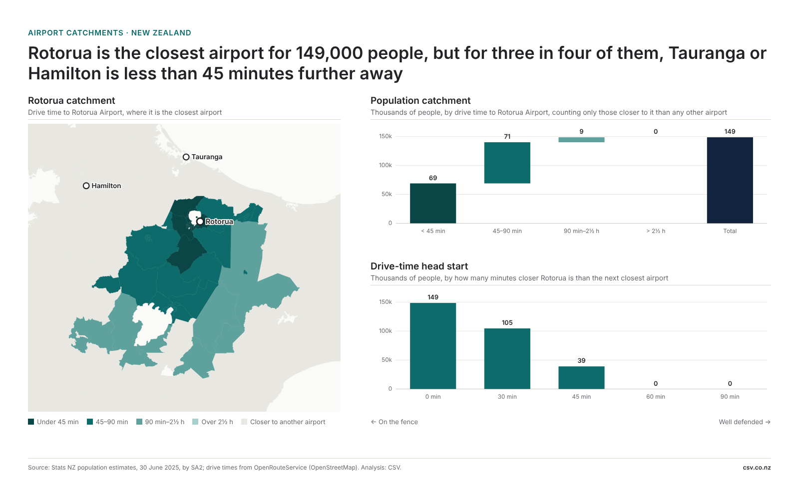

Australia

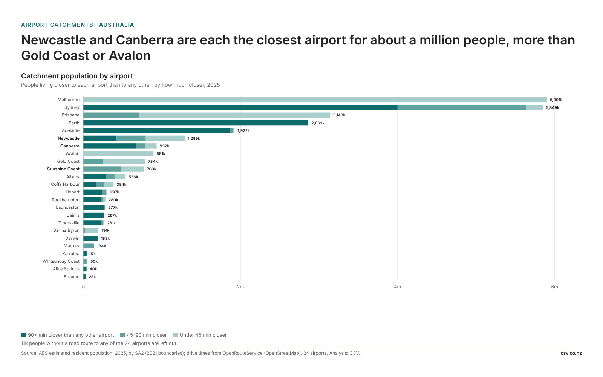

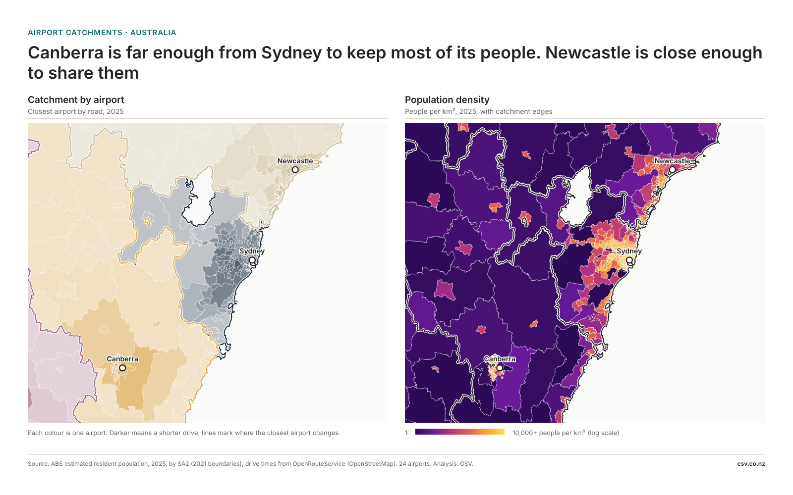
Canberra has 674,000 of its 932,000 nearby people with a 90-minute access advantage. Newcastle has 1.3 million nearby people, but Sydney or another airport is less than 90 minutes further away for two in three of them. Sunshine Coast has 768,000, and Brisbane is less than an hour further for most. Those markets may still support local services; their passengers simply have a more credible alternative for some journeys.

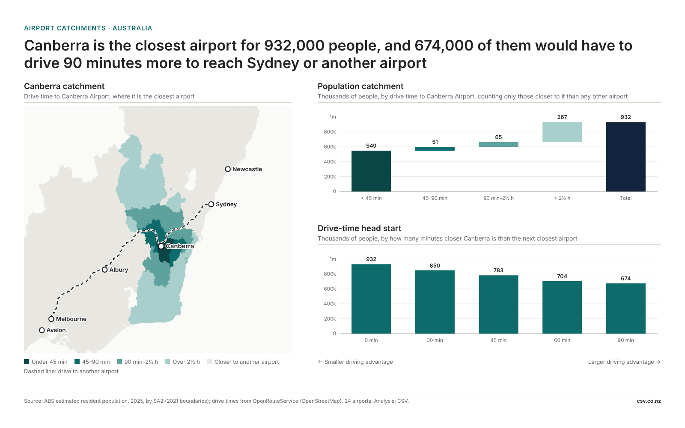

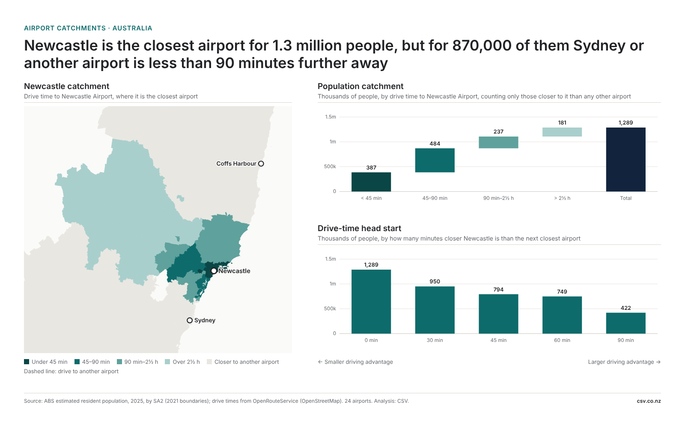

Ireland

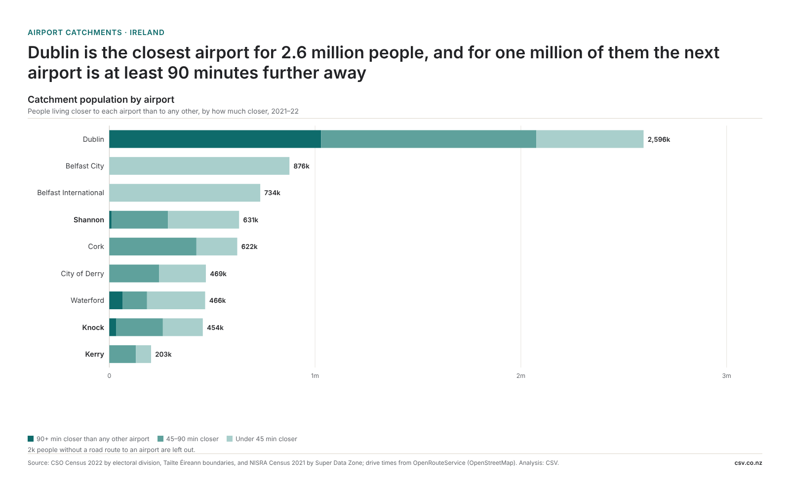

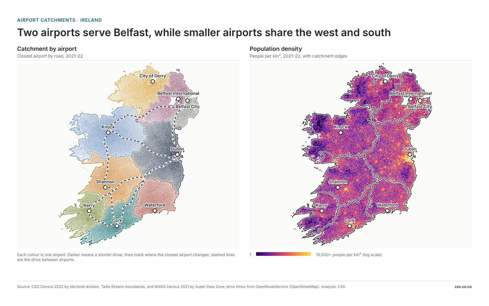
This covers the whole island. Dublin is the closest airport for 2.6 million people, and for one million of them the next airport is at least 90 minutes further away. In Northern Ireland, Belfast City (876,000) and Belfast International (734,000) split the east between them. In the west, Shannon, Knock and Kerry have overlapping local markets: for more than half of Shannon's 631,000 nearby people, another airport is less than 45 minutes further away. The maps show where access is shared; the services on offer show which airport wins a particular trip.


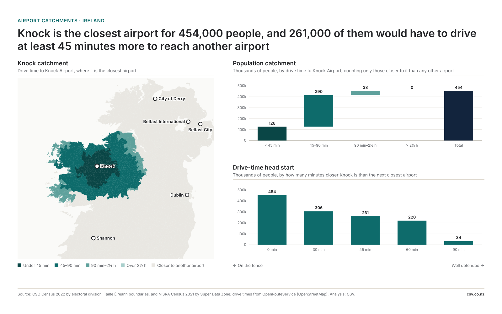

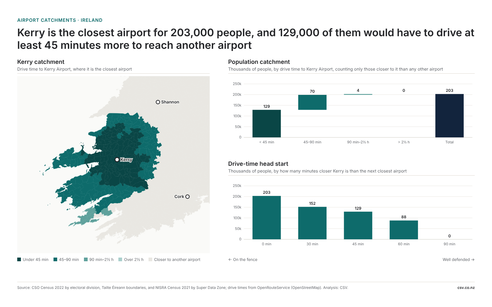
New Zealand: Stats NZ estimated resident population at 30 June 2025, by SA2. Australia: ABS estimated resident population 2025, by SA2 (2021 boundaries). Ireland: CSO Census 2022 by electoral division and NISRA Census 2021 by Super Data Zone (Northern Ireland). Drive times: OpenRouteService on OpenStreetMap roads, from each area's centre, routed October 2026 (Ireland November 2026). Every airport in each country's dataset counts as a rival (14 in New Zealand, 24 in Australia, 9 in Ireland). The analysis measures local road access, not passenger demand or airline network choice. Analysis: CSV. Post published: [day month year].